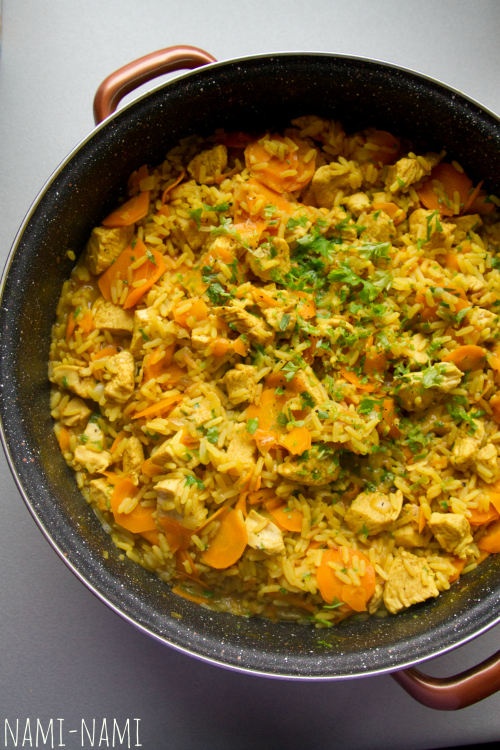

Värvikas kana-riisiroog porganditega.

Koostisosad
| Koostisosad |
Kogus |
| Või |
25 g |
| Sibul |
2 tk |
| Karripulber |
1 sl |
| Kanafilee |
400 g |
| Riis |
250 g |
| Kanapuljong |
750ml |
| Porgand |
450 g |
| Sool |
Tunde järgi |
| Pipar |
Tunde järgi |
Valmistamine
- Lõika kanafileed ribadeks või ampsusuurusteks tükkideks
- Sulata paksupõhjalises potis või tugeval kuumusel, ent ära pruunista. Lisa karripulber, sibul, kanatükid ja riis ning prae paar minutit. Maitsesta kergelt soola-pipraga.
- Lisa puljong. Kuumuta pidevalt segades keemiseni ning hauta kaanega potis umbes 15 minutit, kuni riis on poolpehme.
- Lõika porgand väikesteks kuubikuteks või viiluta nn mandoliiniga. Lisa porgandid ning hauta 3 minutit. Roog on valmis, kui riis on küps, aga porgandid veel krõmpsuvad. Maitsesta vajadusel veel soola ja pipraga.
- Jaota riisiroog kohe kuumadele taldrikutele.
Retsept on mugandatud taanlaste Karolines Køkken retseptivihikust (Risotto med karry). Algretseptis oli ka riivjuustu ja rõõska koort, aga meie arvates pole need vajalikud